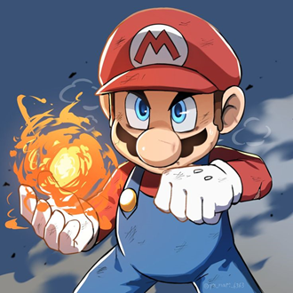

-
Mario (encanador)
Descrição
Mario é o icônico personagem principal da Nintendo. Ele é um encanador italiano que vive no Reino dos Cogumelos e é conhecido por suas aventuras para resgatar a Princesa Peach do vilão Bowser. Mario é reconhecível por seu bigode, boné vermelho com um "M" estampado, macacão azul e camiseta vermelha. Ele é um personagem versátil, estrelando em uma variedade de gêneros de jogos. Ele pode saltar e esmagar inimigos,bem como usar power-ups como o Super Cogumelo, Flor de Fogo e Tanuki, por exemplo.
-
Sonic, O ouriço
Descrição
Sonic é um ouriço azul conhecido por sua incrível velocidade, que usa para combater o vilão Dr. Eggman e salvar o mundo de suas maquinações. Sonic é frequentemente acompanhado por seus amigos, como Tails, Knuckles e Amy Rose. Ele é conhecido por sua atitude confiante e destemida, além de seu desejo incessante por liberdade e aventura e além disso possui uma forma poderosa que o deixo todo dourado quando usa as esmeraldas do caos.
-
Pac-Man
Descrição
Pac-Man é um dos personagens mais icônicos dos videogames, e lançado em 1980. No jogo original, Pac-Man é uma figura amarela em forma de pizza com uma fatia faltando, que percorre um labirinto comendo pontos e frutas enquanto tenta evitar fantasmas inimigos: Blinky, Pinky, Inky e Clyde. O objetivo do jogo é comer todos os pontos no labirinto enquanto se esquiva dos fantasmas, que se tornam vulneráveis quando Pac-Man consome itens especiais chamados "Power Pellets".
-
Kirby
Descrição
Ele é um ser pequeno, redondo e rosa que vive no planeta Popstar. Kirby é conhecido por sua habilidade de inalar inimigos e objetos, copiando suas habilidades. Seu poder de cópia permite que ele adote uma ampla variedade de formas e ataques, tornando-o um dos personagens mais versáteis dos videogames. Ele é frequentemente retratado como um herói alegre e destemido que enfrenta vários inimigos para salvar seu mundo.
-
Ryu

Descrição
Ele é um lutador de artes marciais japonês conhecido por sua busca pela perfeição em suas habilidades de combate. Ryu é retratado como um guerreiro sério e determinado, sempre buscando se tornar mais forte e superar seus limites. Habilidades e Características: Hadoken: Um dos ataques mais icônicos de Ryu, no qual ele lança uma bola de energia concentrada em seus oponentes. Shoryuken: Um poderoso uppercut que Ryu realiza, subindo rapidamente e atingindo seus oponentes com força.
-
Link
Descrição
Ele é um jovem guerreiro frequentemente escolhido para salvar o reino de Hyrule e a Princesa Zelda do vilão Ganon. Link é conhecido por usar uma variedade de armas e itens, como a Espada Mestra, o escudo Hylian, bombas e um arco. Cada jogo da série apresenta uma nova encarnação de Link, mantendo seu papel de corajoso salvador do reino.
-
Pikachu
Descrição
Ele é conhecido por sua aparência adorável, com bochechas que soltam eletricidade, uma cauda em forma de raio e suas orelhas pontudas. Pikachu é o parceiro do protagonista Ash Ketchum na série de anime "Pokémon" e é capaz de ataques elétricos poderosos como "Thunderbolt" e "Volt Tackle". Pikachu representa a amizade e a aventura, sendo um dos personagens mais reconhecíveis e amados da cultura pop.
-
Samus Aran
Descrição
Ela é uma caçadora de recompensas intergaláctica equipada com uma avançada Power Suit, que lhe concede habilidades como o uso de mísseis, bombas e um poderoso canhão de braço. Samus é conhecida por sua bravura, habilidades de combate e determinação. Criada por Gunpei Yokoi, a série "Metroid" é famosa por seu estilo de jogo exploratório, conhecido como "Metroidvania".
-
Megamen
Descrição
Ele é um robô de combate criado pelo Dr. Light para combater o maligno Dr. Wily e seus exércitos de robôs. Mega Man é famoso por sua habilidade de copiar as armas dos robôs mestres que derrota, adaptando seu estilo de combate para enfrentar diversos desafios. A série é conhecida por sua jogabilidade desafiadora e música memorável.